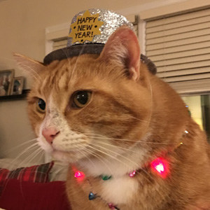
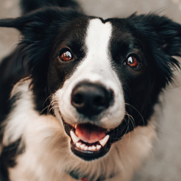
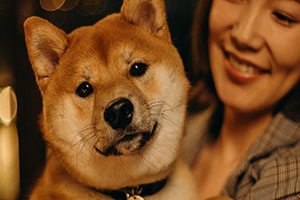

RESCUE U HEADQUARTERS
HOURS OF OPERATION
Monday: 8:00am-5:00pm
Tuesday: 8:00am-6:00pm
Wednesday: 7:00am-5:00pm
Thursday: 8:00am-5:00pm
Friday: 8:00am-5:00pm
Saturday: 8:00am-2:00pm
Sunday: 10:00am-3:00pm
MEET THE 'RESCUE U' TEAM
MARY GRIBULIS

LUKEE FORBES

KAT KENNEDY

JULIANNE CLOUTHIER

TROOPER

HUGO
OUR IMPACT

Each year we support New York's Capital Region, western Massachusetts and southwest Vermont.
RESCUE U 2018 ANNUAL REPORT RESCUE U 2019 ANNUAL REPORTBECOME A VOLUNTEER

Do you love animals and have a passion for providing comfort to those in need? Why not think about volunteering with Rescue U? Contact Rescue U at 518-271-2000 to learn how you can help.